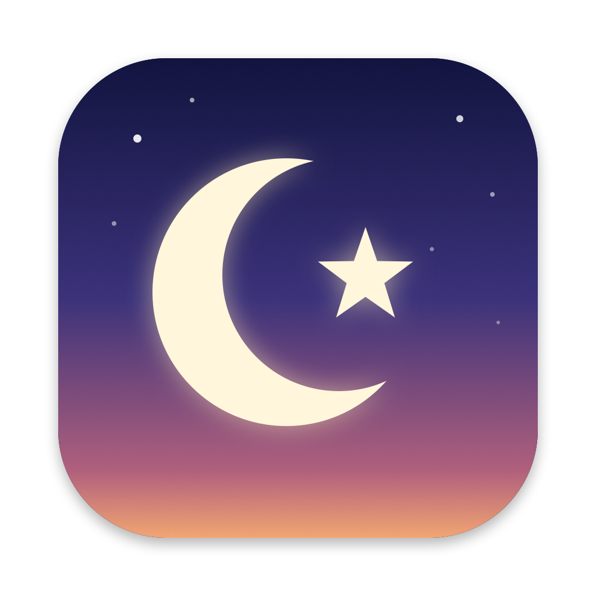

Finder
File
Edit
Maghrib 6:15 PM
Isha 7:31 PM
Maghrib
0:04
0:03
0:02
0:01
now
Next prayer · 6:15 PM
Karachi · 24 Rabiʻ II 1448
Maghrib
It's time to pray · 6:15 PM
Stop
Your Mac has a notch.
Let it call you to prayer.
The island
Point at it for the day's timetable.
Maghrib · 6:15 PM
The adhan, at each prayer.
Recorded at Masjid an-Nabawi, Madinah.
The desktop card
Or a card that
follows the sky.
Drag it anywhere on the desktop.

Namaz
Prayer times and alarms for macOS.
Free and open source · github.com/MajorAbdullah/namaz
Adhan excerpt: “Call to prayer from the Prophet’s Mosque” by ejaz215, Freesound · CC BY 3.0